Procesos y Subprocesos:
Contenido:
Guía para el procesamiento en segundo plano
El procesamiento de datos en segundo plano es una parte importante a la hora de crear una aplicación que sea eficaz para los usuarios y funcione de manera adecuada en la plataforma de Android. Esta guía define las categorías de tareas en segundo plano, proporciona criterios de categorización y recomienda las API que deberías usar para ejecutarlas.
Principio rector
En general, toda tarea que lleve más de unos pocos milisegundos debería delegarse a un subproceso en segundo plano. Las tareas comunes de larga duración incluyen, por ejemplo, decodificar un mapa de bits, acceder al almacenamiento, desarrollar un modelo de aprendizaje automático (AA) o enviar solicitudes de red.
Categorías de tareas en segundo plano
Las tareas en segundo plano se dividen en las siguientes categorías principales:
· Inmediata
· Diferida
· Exacta
A fin de categorizar una tarea, responde las siguientes preguntas y recorre el árbol de decisión de la figura 1 según corresponda:
¿La tarea debe completarse mientras el usuario está interactuando con la aplicación?
Si es así, esa tarea debería clasificarse como inmediata. De lo contrario, pasa a la segunda pregunta.
¿La tarea debe ejecutarse en un momento exacto?
Si necesitas ejecutarla en un momento preciso, clasifica la tarea como exacta.
La mayoría de las tareas no necesitan ejecutarse en un momento exacto. Por lo general, las tareas admiten algunas variaciones cuando se ejecutan en función de ciertas condiciones, como la disponibilidad de la red y la batería restante. Las tareas que no necesitan ejecutarse en un momento exacto deben clasificarse como diferidas.
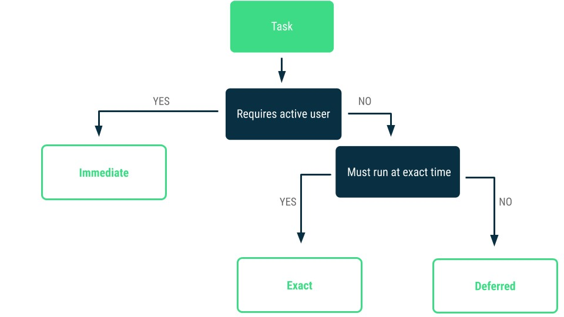Figura 1: Este árbol de decisión te ayudará a determinar qué categoría es la más adecuada para tu tarea en segundo plano.
Tareas inmediatas
Para tareas que necesitan ejecutarse de inmediato y procesarse de forma continua, incluso cuando el usuario coloca la aplicación en segundo plano o se reinicia el dispositivo, te recomendamos que uses WorkManager y su versión compatible con las tareas de larga duración.
En casos específicos, como la reproducción de contenido multimedia o la navegación activa, te recomendamos que uses directamente los
Tareas diferidas
Toda tarea que no esté conectada a una interacción del usuario de forma directa y pueda ejecutarse en cualquier momento puede ser diferida. La solución recomendada para las tareas diferidas es WorkManager.
WorkManager facilita la programación de tareas diferibles y asíncronas que se deben ejecutar incluso si se cierra la app o se reinicia el dispositivo. Consulta la documentación de WorkManager para descubrir cómo programar estos tipos de tareas.
Tareas exactas
Una tarea que debe ejecutarse en un momento exacto puede usar AlarmManager.
Cómo crear varios subprocesos
Un conjunto de subprocesos es una colección administrada de subprocesos que ejecuta tareas en paralelo desde una cola. Se ejecutan las tareas nuevas en los subprocesos existentes a medida que quedan inactivas. Para enviar una tarea a un conjunto de subprocesos, usa la interfaz ExecutorService. Ten en cuenta que ExecutorService no tiene nada que ver con Servicios, el componente de la aplicación de Android.
Crear subprocesos es costoso, por lo que debes crear un conjunto de subprocesos solamente una vez cuando se inicializa tu app. Asegúrate de guardar la instancia de ExecutorService en tu clase Application o en un contenedor de inyección de dependencias. En el siguiente ejemplo, se crea un conjunto de subprocesos que podemos usar para ejecutar tareas en segundo plano.
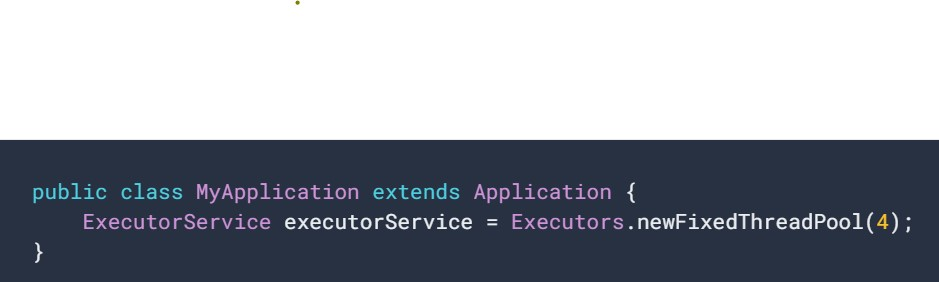Cómo ejecutar en un subproceso en segundo plano
Cuando haces una solicitud de red en el subproceso principal, esta espera o se bloquea hasta que recibe una respuesta. Como el subproceso está bloqueado, el SO no puede llamar a onDraw() y tu app se detiene, lo que podría generar un diálogo Aplicación no responde (ANR). Para evitar esto, ejecutemos esta operación en un subproceso en segundo plano.
Primero, veamos nuestra clase Repository y cómo realiza la solicitud de red:
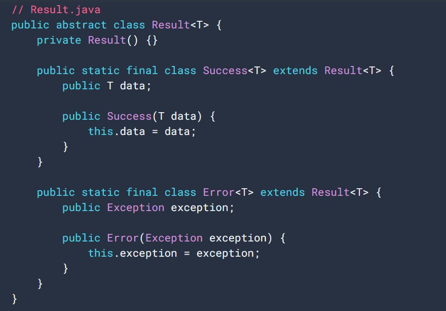 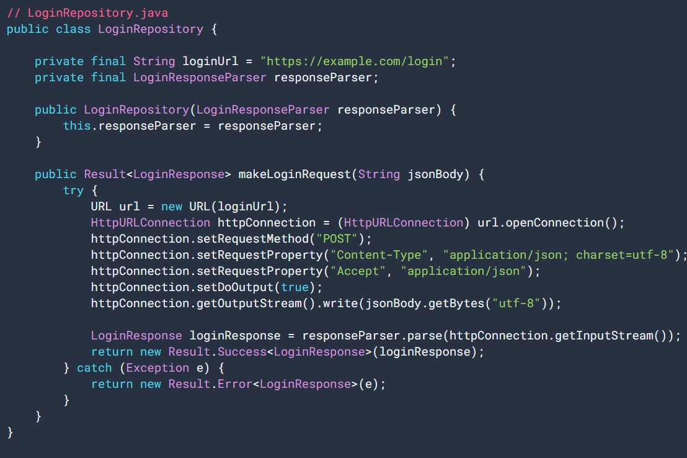La clase makeLoginRequest() es síncrona y bloquea el subproceso de llamada. Para modelar la respuesta de la solicitud de red, tenemos nuestra propia clase Result.
ViewModel activa la solicitud de red cuando el usuario presiona, por ejemplo, un botón:
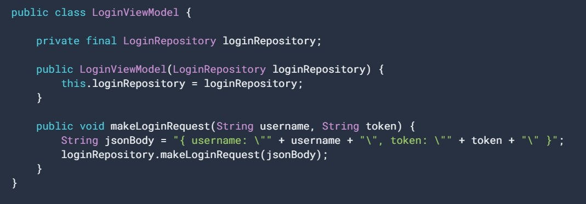Con el código anterior, LoginViewModel bloquea el subproceso principal cuando realiza la solicitud de red. Podemos usar el conjunto de subprocesos del que creamos una instancia para mover la ejecución a un subproceso en segundo plano. Primero, según los principios de inyección de dependencias, LoginRepository toma una instancia de Executor, en lugar de ExecutorService, porque ejecuta código y no administra subprocesos:
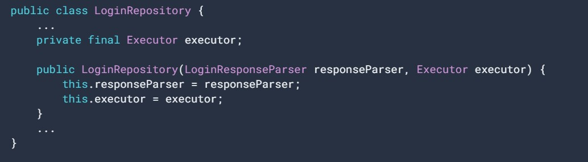El método
Ahora, creemos otra función llamada makeLoginRequest() que pase la ejecución al subproceso en segundo plano y, por el momento, ignore la respuesta:
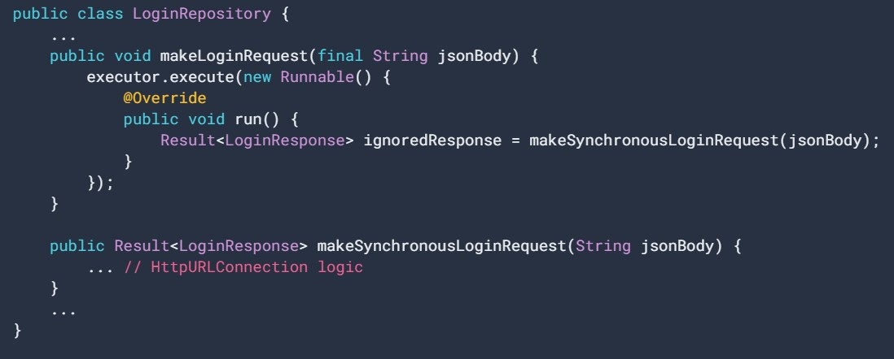Dentro del método execute(), creamos una interfaz Runnable nueva con el bloque de código que queremos ejecutar en el subproceso en segundo plano; en nuestro caso, el método de solicitud de red síncrona. De forma interna, el ExecutorService administra la interfaz Runnable y la ejecuta en un subproceso disponible.
Nota: En Kotlin, puedes usar una expresión lambda para crear una clase anónima que implemente la interfaz SAM.
Consideraciones
Cualquier subproceso de tu app puede ejecutarse en paralelo con otros subprocesos, incluido el subproceso principal, por lo que debes asegurarte de que tu código sea seguro para los subprocesos. Ten en cuenta que, en nuestro ejemplo, evitamos escribir en variables compartidas entre subprocesos y, en cambio, pasamos datos inmutables. Esta es una buena práctica, ya que cada subproceso funciona con su propia instancia de datos y evitamos la complejidad de la sincronización.
Si necesitas compartir el estado entre subprocesos, debes tener cuidado y administrar el acceso desde los subprocesos mediante mecanismos de sincronización, como bloqueos, lo que está fuera del alcance de esta guía. Siempre que sea posible, debes evitar compartir el estado mutable entre subprocesos.
Cómo usar controladores
Puedes usar un Handler para poner en cola una acción que se ejecutará en un subproceso diferente. Para especificar el subproceso en el que se ejecutará la acción, crea el Handler usando un Looper para el subproceso. Un Looper es un objeto que ejecuta el bucle de mensajes para un subproceso asociado. Una vez que hayas creado un Handler, puedes usar el método
Looper incluye una función auxiliar,
Se recomienda insertar el controlador en el Repository, ya que brinda más flexibilidad. Por ejemplo, en el futuro, es posible que quieras pasar un Handler diferente para programar tareas en un subproceso separado. Si siempre te comunicas con el mismo subproceso, puedes pasar el Handler al constructor del Repository, como se muestra en el siguiente ejemplo.
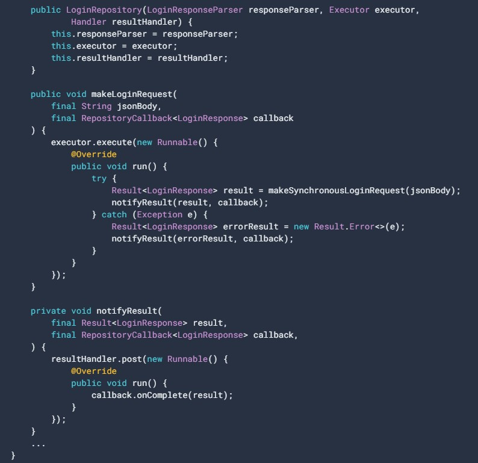Como alternativa, si buscas mayor flexibilidad, puedes pasar un controlador a cada función:
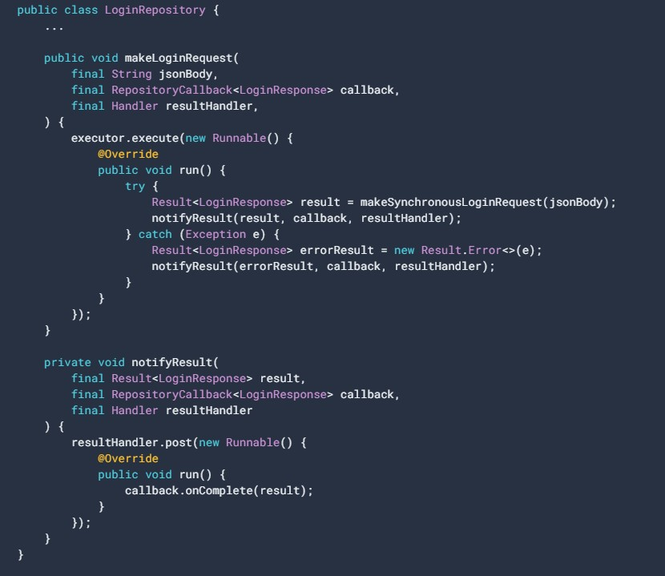En este ejemplo, la devolución de llamada que se pasó a la llamada makeLoginRequest del repositorio se ejecuta en el subproceso principal. De esta forma, puedes modificar directamente la IU desde la devolución de llamada o usar LiveData.setValue() para comunicarte con la IU.
Cómo configurar un conjunto de subprocesos
Puedes crear un conjunto de subprocesos usando una de las funciones de ayuda Executor con configuraciones predefinidas, como se muestra en el código de ejemplo anterior. Como alternativa, si deseas personalizar los detalles del conjunto de subprocesos, puedes crear una instancia usando directamente ThreadPoolExecutor. Puedes configurar los siguientes detalles:
· Tamaño inicial y máximo del conjunto.
· Tiempo de mantenimiento de conexión y unidad de tiempo. El tiempo de mantenimiento de actividad es la duración máxima que un subproceso puede permanecer inactivo antes de cerrarse.
· Una cola de entrada que conserve tareas del objeto Runnable. Esta cola debe implementar la interfaz BlockingQueue. Para cumplir con los requisitos de tu app, puedes elegir entre las implementaciones de cola disponibles.
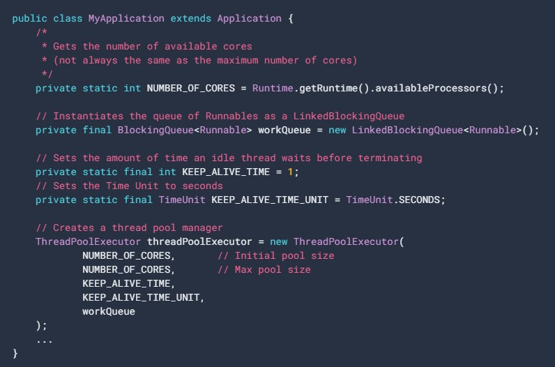Este es un ejemplo en el que se especifica el tamaño del conjunto de subprocesos en función de la cantidad total de núcleos de procesador, un tiempo de mantenimiento de actividad de un segundo y una cola de entrada.
Optimizaciones en segundo plano
Los procesos en segundo plano pueden consumir mucha memoria y batería. Por ejemplo, una emisión implícita puede iniciar muchos procesos en segundo plano que se registraron para recibirla, incluso si esos procesos no realizan mucho trabajo. Esto puede afectar de manera considerable tanto el rendimiento del dispositivo como la experiencia del usuario.
Para solucionar este problema, en Android 7.0 (API nivel 24) se aplican las siguientes restricciones:
· Las apps que se orientan a Android 7.0 (API nivel 24) y versiones posteriores no recibirán emisiones de
· Las apps no pueden enviar ni recibir emisiones
Si tu app usa alguno de estos intents, debes quitarles las dependencias tan pronto como sea posible para orientar de manera correcta a dispositivos con Android 7.0 o versiones posteriores. El marco de trabajo de Android proporciona varias soluciones para mitigar la necesidad de estas emisiones implícitas. Por ejemplo, JobScheduler y el nuevo WorkManager proporcionan mecanismos eficaces para programar operaciones de red cuando se cumplen condiciones específicas, como una conexión a una red no medida. Ahora también puedes usar JobScheduler para reaccionar a los cambios realizados en los proveedores de contenido. Los objetos JobInfo encapsulan los parámetros que JobScheduler usa para programar el trabajo. Cuando se cumplen las condiciones del trabajo, el sistema lo ejecuta en el JobService.
Restricciones iniciadas por el usuario
A partir de Android 9 (API nivel 28), si una app muestra comportamientos perjudiciales como los que se describen en Android vitals, el sistema le solicita al usuario que restrinja el acceso de esa app a los recursos del sistema.
Si el sistema noto que una app está consumiendo recursos excesivos, le envía una notificación al usuario y le da la opción de restringir las acciones de la app. Entre los comportamientos que pueden activar la notificación, se incluyen los siguientes:
· Bloqueos de activación excesivos: 1 bloqueo de activación parcial retenido durante una hora cuando la pantalla está apagada.
· Servicios en segundo plano excesivos: Si la app está orientada a niveles de API inferiores a 26 y tiene demasiados servicios en segundo plano.
Las restricciones precisas que se imponen son determinadas por el fabricante del dispositivo. Por ejemplo, en las compilaciones de AOSP, las apps restringidas no pueden ejecutar tareas, activar alarmas ni usar la red, excepto cuando están en primer plano. (A fin de conocer los criterios que se usan para determinar si una app está en primer plano, consulta
Restricciones para la recepción de emisiones de actividad de red
Las apps que se orienten a Android 7.0 (API nivel 24) no recibirán emisiones de
Nota: Un BroadcastReceiver registrado con
Cómo programar trabajos de red en conexiones no medidas
Cuando uses la clase JobInfo.Builder para compilar tu objeto JobInfo, aplica el método setRequiredNetworkType() y pasa JobInfo.NETWORK_TYPE_UNMETERED como parámetro de trabajo. En el siguiente ejemplo de código, se programa un servicio para que se ejecute cuando el dispositivo se conecte a una red no medida y se cargue:
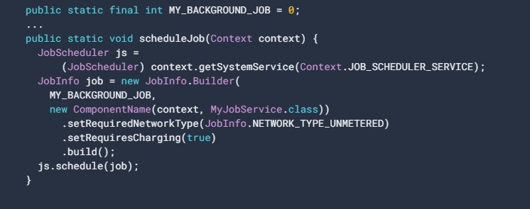Cuando se cumplan las condiciones para el trabajo, la app recibirá una devolución de llamada para ejecutar el método
Una nueva alternativa a JobScheduler es WorkManager, una API que te permite programar tareas en segundo plano que necesitan una finalización garantizada, independientemente de si el proceso de la app está activo o no. WorkManager elige la forma adecuada de ejecutar el trabajo (ya sea directamente en un subproceso del proceso de la app o en JobScheduler, FirebaseJobDispatcher o AlarmManager) según factores como el nivel de API del dispositivo. Además, WorkManager no requiere Servicios de Play y proporciona varias funciones avanzadas, como encadenar tareas o verificar el estado de una tarea. Para obtener más información, consulta WorkManager.
Cómo supervisar la conectividad de red mientras se ejecuta la app
Las apps que están en ejecución pueden detectar CONNECTIVITY_CHANGE con un BroadcastReceiver registrado. Sin embargo, la API de ConnectivityManager proporciona un método más sólido para solicitar una devolución de llamada solo cuando se cumplen las condiciones de red especificadas.
Los objetos NetworkRequest definen los parámetros de la validación de llamada de la red en términos de NetworkCapabilities.
Crear objetos NetworkRequest con clase NetworkRequest.Builder. registerNetworkCallback() luego pasa el objeto NetworkRequest al sistema. Cuando se cumplen las condiciones de red, la app recibe una devolución de llamada para ejecutar el método onAvailable() definido en su clase ConnectivityManager.NetworkCallback.
La app continúa recibiendo devoluciones de llamada hasta que se cierra o llama a
Restricciones para la recepción de emisiones de imagen y video
En Android 7.0 (API nivel 24), las apps no pueden enviar ni recibir emisiones de
Cómo activar trabajos durante cambios de URI de contenido
Para activar trabajos durante cambios de URI de contenido, en Android 7.0 (API nivel 24) se extiende la API de JobInfo con los siguientes métodos:
· JobInfo.TriggerContentUri()
Encapsula los parámetros necesarios para activar un trabajo durante los cambios de URI de contenido.
· JobInfo.Builder.addTriggerContentUri()
Pasa un objeto TriggerContentUri a JobInfo. Un ContentObserver controla el URI de contenido encapsulado. Si hay varios objetos TriggerContentUri asociados a un trabajo, el sistema realizará una devolución de llamada incluso aunque se informe un cambio en un solo URI de contenido.
Si cambia algún desencadenante del URI determinado, agrega el TriggerContentUri.FLAG_NOTIFY_FOR_DESCENDANTS para activar el trabajo. Esta marca corresponde al parámetro notifyForDescendants que se pasa a
En el siguiente código de muestra, se programa un trabajo para que se active cuando el sistema informe un cambio en el URI de contenido, MEDIA_URI:
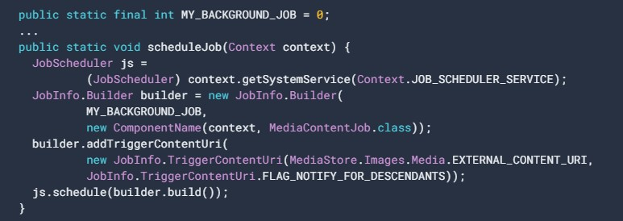Cuando el sistema informa un cambio en los URI especificados, la app recibe una devolución de llamada y se pasa un objeto JobParameters al método
Como determinar que autoridades de contenido activaron un trabajo
Se extiende los JobParameters para permitir que las apps reciban información útil sobre qué autoridades de contenido y URI activaron el trabajo, como son:
Uri[] getTriggeredContentUris()
Muestra un arreglo de URI que activara el trabajo. Este será null si ninguno de los URI activó el trabajo o si el número de URI modificados es mayor que 50.
String[] getTriggeredContentAuthorities()
Muestra un arreglo de strings de autoridades de contenido que activara el trabajo. Si el arreglo que se muestra no es null, usa getTriggeredContentUris() para recuperar los detalles de los URI que se modificaron.
En el siguiente código se anula el método JobService.onStartJob() y se registran las autoridades de contenido y los URI que activaron el trabajo:
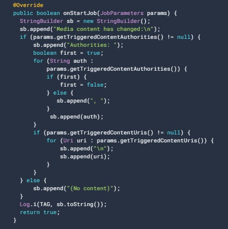Como optimizar aún más tu app
Se puede optimizar las apps para que se ejecuten en dispositivos con poca memoria o en condiciones de poca memoria, puede mejorar el rendimiento y la experiencia del usuario, por lo tanto, si quitas las dependencias de los servicios en segundo plano y los receptores de emisión implícita registrados en manifiestos, tu app funcionará mejor en esos dispositivos.
Aunque Android 7.0 (API nivel 24)
· Tome medidas para reducir algunos de estos problemas, se recomienda optimizar la app a fin de que se ejecute sin usar en absoluto estos procesos en segundo plano.
· Presenta algunos comandos adicionales de Android Debug Bridge (ADB) que puedes usar para probar el comportamiento de la app con esos procesos en segundo plano inhabilitados:
- Para simular condiciones en las que las emisiones implícitas y los servicios en segundo plano no están disponibles, ingresa el siguiente comando:
- Para volver a habilitar las emisiones implícitas y los servicios en segundo plano, ingresa el siguiente comando:

Descripción general de las transmisiones
Las apps de Android pueden enviar o recibir mensajes de emisión desde el sistema de Android y otras apps para Android, de forma similar al patrón de diseño de publicación y suscripción.
Las apps también pueden enviar emisiones personalizadas, por ejemplo, para notificar a otras apps sobre algo que podría interesarles (como cuando se descargaron algunos datos nuevos).
Por lo general, las emisiones pueden usarse como un sistema de mensajería entre apps y fuera del flujo de usuarios normal. Sin embargo, debes tener cuidado de no abusar de la oportunidad de responder a las emisiones y ejecutar tareas en segundo plano que puedan contribuir a ralentizar el rendimiento del sistema.
Cambios en las emisiones del sistema
Android 9
La emisión NETWORK_STATE_CHANGED_ACTION no recibe información sobre la ubicación del usuario ni los datos de carácter personal.
Si las emisiones del sistema desde Wi-Fi no contienen SSID, BSSID, información de conexión ni resultados de análisis se puede obtener esta información llamando a getConnectionInfo().
Android 8.0
El sistema impone restricciones adicionales a los receptores declarados en el manifiesto.
Se puede usar un receptor registrado en el contexto cuando el usuario usa la app de forma activa, esto se usa para la mayoría de las emisiones implícitas.
Android 7.0
Las versiones posteriores no envían las siguientes emisiones del sistema:
ACTION_NEW_PICTURE
ACTION_NEW_VIDEO
Además, las apps que se orientan a Android 7.0 y versiones posteriores deben registrar la emisión de CONNECTIVITY_ACTION mediante registerReceiver(BroadcastReceiver, IntentFilter). La declaración de un receptor en el manifiesto no funciona.
Cómo recibir emisiones
Las apps pueden recibir emisiones de dos maneras: mediante receptores declarados en el manifiesto y mediante receptores registrados en el contexto.
1. Receptores declarados en el manifiesto.
Si se declara un receptor de emisión en el manifiesto, el sistema inicia la app cuando se envía la emisión.
Para declarar un receptor de emisión en el manifiesto, realiza los siguientes pasos:
1.1. Especifica el elemento <receiver> en el manifiesto de tu app.
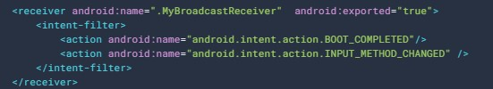1.2. Crea la subclase BroadcastReceiver y, luego, implementa onReceive(Context, Intent). El receptor de emisión del siguiente ejemplo registra y muestra el contenido de la emisión:
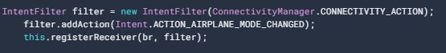1.3. Para dejar de recibir emisiones, llama a unregisterReceiver(android.content.BroadcastReceiver).
Asegúrate de anular el registro del receptor cuando ya no lo necesites o el contexto ya no sea válido.
Importante:
De acuerdo donde se registre y se anule el registro del receptor.
Ejemplo:
Si se registra en onCreate(Bundle) mediante el contexto de la actividad, se debe anular el registro en onDestroy() a fin de evitar que el receptor salga del contexto de la actividad.
Si se registra un receptor en onResume(), se debe anular el registro en onPause() a fin de evitar registrarlo varias veces.
NO anular el registro en onSaveInstanceState(Bundle), porque no se llama a este si el usuario retrocede en la pila del historial.
Efectos en el estado del proceso
El estado de BroadcastReceiver siendo que este en ejecución o no afecta el estado del proceso que lo contiene lo que da una posibilidad a que el sistema lo elimine. Por ejemplo cuando un proceso ejecuta un receptor (es decir, actualmente ejecuta el código en su método onReceive()), se considera que es un proceso en primer plano.
El proceso de alojamiento del receptor se vuelve tan importante como los demás componentes de la app que se ejecutan en él.
Si el proceso aloja solo un receptor declarado en el manifiesto cuando se muestra desde onReceive(), el sistema considera que su proceso es de baja prioridad y puede eliminarlo a fin de que los recursos estén disponibles para otros procesos más importantes.
Por tal razón no se debe comenzar a ejecutar subprocesos prolongados en segundo plano desde un receptor de emisión. Después de onReceive(), el sistema puede eliminar el proceso en cualquier momento a fin de reclamar la memoria y, al hacerlo, finaliza el subproceso generado que se ejecuta en el proceso.
Para evitarlo:
goAsync(): Si se desea un poco más de tiempo para procesar la emisión en un subproceso en segundo plano o programas un JobService desde el receptor por medio del JobScheduler de manera que el sistema sepa que el proceso continúa trabajando activamente para obtener más información Ciclo de vida de procesos.
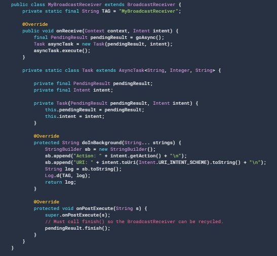Cómo enviar emisiones
Android ofrece tres maneras para que las apps envíen emisiones:
· El método sendOrderedBroadcast(Intent, String) envía emisiones a un receptor por vez. Como se ejecuta un receptor por vez, este puede propagar un resultado al siguiente o puede anular por completo la emisión de manera que no se transmita a otros. El orden en el que se ejecutan los receptores puede controlarse con el atributo android:priority del filtro de intent coincidente; los receptores con la misma prioridad se ejecutarán en orden aleatorio.
· El método sendBroadcast(Intent) envía emisiones a todos los receptores en un orden no especificado, lo que se denomina emisión normal. Este método es más eficiente, pero implica que los receptores no pueden leer los resultados de otros receptores, propagar los datos recibidos de la emisión ni anular la emisión.
· El método LocalBroadcastManager.sendBroadcast envía emisiones a los receptores que están en la misma app que el emisor. Si no necesitas enviar emisiones entre apps, usa emisiones locales. La implementación es mucho más eficiente (no se requiere comunicación entre procesos) y no tienes que preocuparte por ningún problema de seguridad relacionado con otras apps que puedan recibir o enviar emisiones.
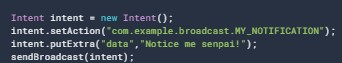Nota: Si bien los intents se usan tanto para enviar emisiones como para iniciar actividades con startActivity(Intent), estas acciones no tienen ninguna relación. Los receptores de emisión no pueden ver ni capturar los intents que se usan para iniciar una actividad. Del mismo modo, cuando emites un intent, no puedes buscar ni iniciar una actividad.
Cómo restringir emisiones con permisos
Los permisos te permiten restringir emisiones a un conjunto de apps que cuenta con permisos específicos. Puedes aplicar restricciones tanto en el emisor como en el receptor de una emisión.
Cómo enviar emisiones con permisos
Cuando llamas a sendBroadcast(Intent, String) o sendOrderedBroadcast(Intent, String, BroadcastReceiver, Handler, int, String, Bundle) se puede especificar un parámetro de permiso. Solo pueden recibir la emisión los receptores que solicitaron ese permiso con la etiqueta en su manifiesto y a los que posteriormente se les otorgó el permiso si es peligroso.
Por ejemplo, el siguiente código envía una emisión:
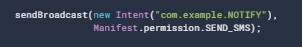Para recibir la emisión, la app receptora debe solicitar el permiso como se indica a continuación:
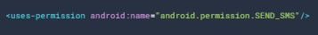Puedes especificar un permiso existente del sistema como SEND_SMS o definir un permiso personalizado con el elemento <permission>. Para obtener información sobre los permisos y la seguridad en general, consulta los Permisos del sistema.
Nota: Los permisos personalizados se registran cuando se instala la app. La app que define el permiso personalizado debe instalarse antes que la app que lo usa.
Cómo recibir emisiones con permisos
Si se especifica un parámetro de permisos cuando se registra un receptor de emisión sea con registerReceiver(BroadcastReceiver, IntentFilter, String, Handler) o en la etiqueta <receiver> en tu manifiesto, solo los emisores que solicitaron el permiso con la etiqueta <uses-permission> en su manifiesto y a los que posteriormente se les otorgó el permiso si es peligroso pueden enviar un intent al receptor.
Por ejemplo, supongamos que tu app receptora tiene un receptor declarado en el manifiesto como se muestra a continuación:

O bien la app receptora tiene un receptor registrado en el contexto, de la siguiente manera:
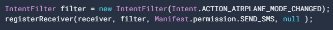Luego, para poder enviar emisiones a esos receptores, la app que las envía debe solicitar el permiso como se indica a continuación:
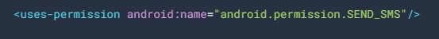Consideraciones de seguridad y prácticas recomendadas
Estas son algunas consideraciones de seguridad y las prácticas recomendadas para enviar y recibir emisiones:
· Si no necesitas enviar emisiones a componentes fuera de tu app, puedes enviar y recibir emisiones locales con el LocalBroadcastManager que está disponible en la biblioteca de compatibilidad. El LocalBroadcastManager es mucho más eficiente no se requiere comunicación entre procesos y te permite evitar problemas de seguridad relacionados con otras apps que pueden recibir o enviar tus emisiones. Las emisiones locales pueden usarse como un bus de eventos de publicación y suscripción de uso general en tu app sin ningún tipo de sobrecarga de emisiones en todo el sistema.
· Si se registraron muchas apps para recibir la misma emisión en su manifiesto, es posible que el sistema inicie muchas apps, lo que afecta considerablemente el rendimiento del dispositivo y la experiencia del usuario. Si quieres evitarlo, debes usar el registro de contexto en lugar de la declaración en el manifiesto. A veces, el propio sistema Android impone el uso de receptores registrados en el contexto. Por ejemplo, la emisión de CONNECTIVITY_ACTION se envía solamente a receptores registrados en el contexto.
· No emitas información sensible mediante un intent implícito, ya que cualquier app que se registre para recibir la emisión puede leer la información. Existen tres maneras de controlar quién puede recibir tus emisiones:
ü Puedes especificar un permiso cuando envías una emisión.
ü En Android 4.0 y versiones posteriores, puedes especificar un paquete con setPackage(String) cuando envías una emisión. El sistema restringe la emisión al conjunto de apps que coinciden con el paquete.
ü Puedes enviar emisiones locales con LocalBroadcastManager.
· Cuando registras un receptor, cualquier app puede enviar emisiones potencialmente maliciosas al receptor de tu app. Existen tres maneras de limitar las emisiones que recibe tu app:
ü Puedes especificar un permiso cuando registras un receptor de emisión.
ü En el caso de los receptores declarados en el manifiesto, puedes establecer el atributo android:exported en "false" en el manifiesto. El receptor no recibe emisiones de fuentes externas a la app.
ü Puedes limitarte solo a emisiones locales con LocalBroadcastManager.
· El espacio de nombres para las acciones de emisión es global. Asegúrate de que los nombres de las acciones y otras strings estén escritos en un espacio de nombres del cual seas propietario; de lo contrario, podría generarse un conflicto con otras apps accidentalmente.
· Como el método onReceive(Context, Intent) de un receptor se ejecuta en el subproceso principal, debería ejecutarse y mostrarse rápidamente. Si necesitas realizar una tarea prolongada, sé cuidadoso al generar subprocesos o al iniciar servicios en segundo plano, ya que el sistema podría eliminar todo el proceso después de que se muestre onReceive(). Para obtener más información, consulta Efectos en el estado del proceso. A fin de realizar una tarea prolongada, te recomendamos que hagas lo siguiente:
ü Llama a goAsync() en el método onReceive() de tu receptor y pasa BroadcastReceiver.PendingResult a un subproceso en segundo plano. De esta manera, la emisión se mantiene activa luego de que se muestra desde onReceive(). Sin embargo, incluso con este enfoque, el sistema espera que termines la emisión rápidamente (menos de 10 segundos). De igual manera, te permite mover la tarea a otro subproceso a fin de evitar que se produzca un error en el subproceso principal.
ü Programa una tarea con JobScheduler. Para obtener más información, consulta Programación inteligente de tareas.
· No inicies actividades desde receptores de emisión porque la experiencia del usuario no es coherente, en especial, si hay varios receptores. En su lugar, considera mostrar una notificación.
Excepciones de transmisiones implícitas
Las apps pueden seguir registrando objetos de escucha para las siguientes emisiones, sin importar el nivel de API al que se orienten las apps. Si bien estas emisiones implícitas funcionan en segundo plano, debes evitar registrar objetos de escucha para ellas.
ACTION_LOCKED_BOOT_COMPLETED, ACTION_BOOT_COMPLETED: Están exentas porque estas emisiones solo se envían una vez, en el primer inicio, y muchas apps necesitan recibirlas a fin de programar tareas, alarmas,etc.
ACTION_USER_INITIALIZE,"android.intent.action.USER_ADDED", “android.intent.action.USER_REMOVED": Estas emisiones están protegidas con permisos privilegiados, de manera que las apps comunes no pueden recibirlas.
"android.intent.action.TIME_SET",ACTION_TIMEZONE_CHANGED, ACTION_NEXT_ALARM_CLOCK_CHANGED: Es posible que las apps de reloj necesiten recibir estas emisiones a fin de actualizar las alarmas cuando se cambian la hora, la zona horaria o las alarmas.
ACTION_LOCALE_CHANGED: Solo se envía cuando la configuración regional cambia, lo que no ocurre con frecuencia. Es posible que las apps necesiten actualizar sus datos cuando cambie la configuración regional.
ACTION_USB_ACCESSORY_ATTACHED,ACTION_USB_ACCESSORY_DETACHED, ACTION_USB_DEVICE_ATTACHED, ACTION_USB_DEVICE_DETACHED: Si una app necesita información sobre estos eventos relacionados con USB, actualmente no existe una buena alternativa de registro para recibir la emisión.
ACTION_CONNECTION_STATE_CHANGED,ACTION_CONNECTION_STATE_CHANGED, ACTION_ACL_CONNECTED, ACTION_ACL_DISCONNECTED: No es probable que la experiencia del usuario se vea afectada si las apps reciben emisiones para estos eventos Bluetooth.
ACTION_CARRIER_CONFIG_CHANGED, TelephonyIntents.ACTION_*_SUBSCRIPTION_CHANGED, "TelephonyIntents.SECRET_CODE_ACTION", ACTION_PHONE_STATE_CHANGED, ACTION_PHONE_ACCOUNT_REGISTERED y ACTION_PHONE_ACCOUNT_UNREGISTERED
Es posible que las apps de telefonía del OEM necesiten recibir estas emisiones.
LOGIN_ACCOUNTS_CHANGED_ACTION
Algunas apps necesitan conocer los cambios en las cuentas de acceso a fin de poder configurar operaciones programadas para las cuentas nuevas y modificadas.
ACTION_ACCOUNT_REMOVED
Las apps que tienen visibilidad de una cuenta reciben esta emisión cuando se quita la cuenta. Si este es el único cambio de cuenta en el que la app necesita actuar, se recomienda encarecidamente que la app use esta emisión en lugar de la LOGIN_ACCOUNTS_CHANGED_ACTION obsoleta.
ACTION_PACKAGE_DATA_CLEARED
Solo se envía cuando el usuario borra explícitamente sus datos de la Configuración, por lo que es poco probable que los receptores de emisión afecten significativamente la experiencia del usuario.
ACTION_PACKAGE_FULLY_REMOVED
Es posible que algunas apps necesiten actualizar sus datos almacenados cuando se quite otro paquete; en el caso de estas apps, no hay una buena alternativa de registro para recibir esta emisión.
Limitaciones de transición
Las aplicaciones a Android 8.0 o versiones posteriores ya no pueden registrar receptores para transmisiones implícitas en su manifiesto.
Por ejemplo:
ACTION PACKAGE REPLACED: es una transmission implícita ya que se envía a todos los receptores registrados y comunica a estos que se remplazó algún paquete en el dispositivo.
· Las apps pueden continuar registrándose para transmisiones explicitas en sus manifiestos.
· Las apps pueden usar Context.registerReceiver() durante el tiempo de ejecución con el fin de registrar un receptor para cualquier transmisión sea implícita o explicita.
Nota: Actualmente varias transmisiones implícitas quedan exentas de esta limitación. Las apps pueden continuar registrando receptores para estas transmisiones en sus manifiestos, sin importar el nivel de la API al cual se orienten. Para acceder a una lista de las transmisiones excluidas.
Accede aquí para tener más información